Home / Velasquez / Diego Velasquez
Diego Velasquez
From the original Art on Stamps archive
Velázquez’s own likeness introduces this philatelic selection. The stamps below bring together portraits of the Spanish court, individual sitters, and celebrated scenes from his paintings.
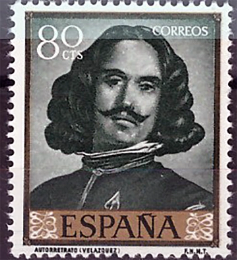
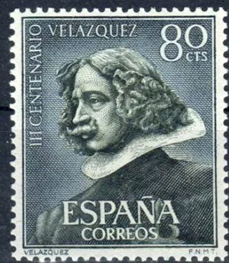
Velázquez, Diego Rodríguez de Silva y (1599-1660), Spanish painter, the country's greatest Baroque artist, was born in Seville on June 6, 1599; both his parents were from the minor nobility.Velázquez's early works, fall into three categories-the bodegón, (everyday subjects combined with still life), portraits, and religious scenes. Many of his earliest paintings show a strong naturalist bias, as in The Meal (c. 1617, Hermitage, St Petersburg), a bodegón which may have been his first work as an independent master. In his bodegones, such as Water Seller of Seville (c. 1619-1620, Apsley House, London), the masterly effects of light and shadow, as well as the direct observation of nature, make inevitable a comparison with the work of Caravaggio.
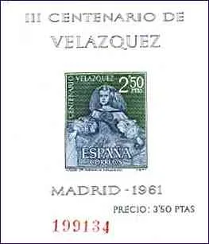
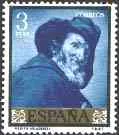
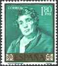
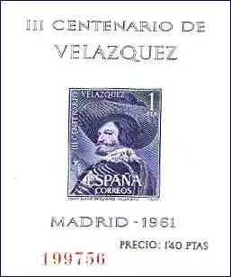
For his religious paintings, images of simple piety, Velázquez used as models people drawn from the streets of Seville. In Adoration of the Magi (1619, Prado, Madrid), for example, the biblical figures are portraits of members of his own family; a self-portrait is included as well.
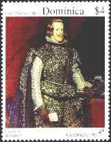
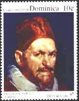
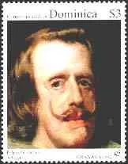
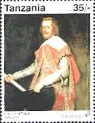
In 1623, after executing a portrait (1623, Prado) of the king, he was named official painter to Philip IV. The portrait was the first among many such sober, direct depictions of the king, the royal family, and members of the court. Indeed, throughout the later 1620s, Velázquez dedicated most of his efforts to portraiture. Mythological subjects would at times occupy his attention, as in Bacchus or The Drinkers (1628-1629, Prado).In August 1629 Velázquez left Barcelona for Genoa and spent most of the next two years traveling in Italy. From Genoa he proceeded to Milan, Venice, Florence, and Rome, returning to Spain from Naples in January 1631. In the course of his journey he closely studied both the art of the Renaissance and contemporaneous painting.
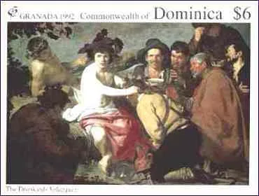
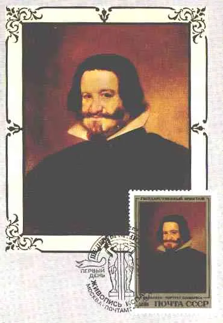
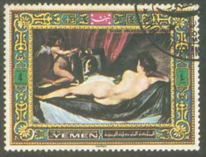
On his return to Madrid, Velázquez resumed his duties as court portraitist with the sensitive painting Prince Baltasar Carlos with a Dwarf (1631, Museum of Fine Arts, Boston), an image made poignant by the young prince's death before reaching adulthood. In 1634 Velázquez organized the decoration of the throne room; this scheme consisted of 12 scenes of battles in which Spanish troops had been victorious. Velázquez's contribution to the cycle of battle pictures included the Surrender of Breda (1634, Prado), portraying a magnanimous Spanish general receiving the leader of defeated Flemish troops. The delicacy of handling and astonishing range of emotions captured in a single painting make this the most celebrated historical composition of Spanish Baroque art.
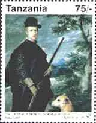
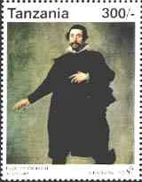
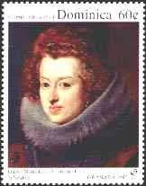
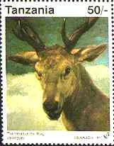
The second major series of paintings of the 1630s by Velázquez was a group of hunting portraits of the royal family for the Torre de la Parada, a hunting lodge near Madrid. Dating from the late 1630s and early 1640s are the famous depictions of court dwarfs in which, unlike court-jester portraits by earlier artists, the sitters are treated with respect and sympathy.
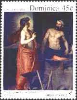
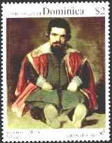
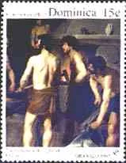
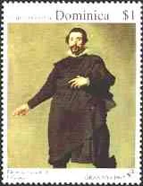
During the last 20 years of his life Velázquez's work as court official and architect assumed prime importance. In 1649 he again went to Italy, this time to buy works of art for the king's collection. During his year's stay in Rome (1649-1650) he painted the magnificent portraits ofJuan de Pareja(Metropolitan Museum of Art, New York) and of Pope Innocent X (Palazzo Doria-Pamphili, Rome). The elegant Venus at Her Toilette, known also under the name of The Rockeby Venus (National Gallery, London) probably dates from this time also.
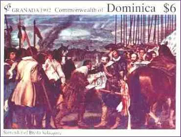
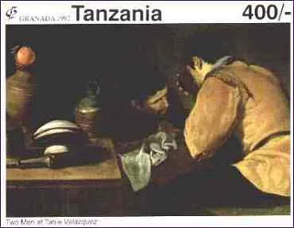
Notice:Interestingly enough, this is one of the most popular pages of the present site.